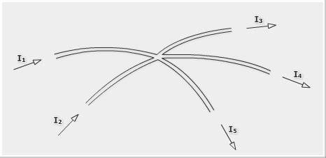

Egy összetett áramkörben több áramköri elem is található. Az ilyen áramkörökben legalább három áramág - vezeték - találkozását csomópontnak nevezzük.
A csomóponti törvény az a fizikai tényt fogalmazza meg elegánsan, miszerint a csomópontban töltés nem halmozódhat fel, azaz a csomópontba befolyó áramok összege megegyezik a csomópontból kifolyó áramok összegével.
Ha a csomópontba befolyó áramokat pozitív, míg a csomópontból kifolyó áramokat negatív előjellel vesszük figyelembe, akkor a törvényt úgy is megfogalmazhatjuk, hogy a csomópontban találkozó áramok összege nulla. A fenti ábra alapján a csomóponti törvényt felírva a következő egyenletet kapjuk:
Az elektronoknak több útjuk is van. Ha valamelyik fogyasztó kiesik az áramkörből, a többi ágon még tud folyni az áram. Az főágban folyó áramerősség pedig a mellékágak áramerősségeinek összege lesz: I = I1 + I2.
Az áramerősség méréséhez szükséges ampermérőt mindig azzal a fogyasztóval sorosan kötjük az áramkörbe, amit meg szeretnénk mérni, mivel a soros kötésnél ugyanakkora lesz az áramerősség.